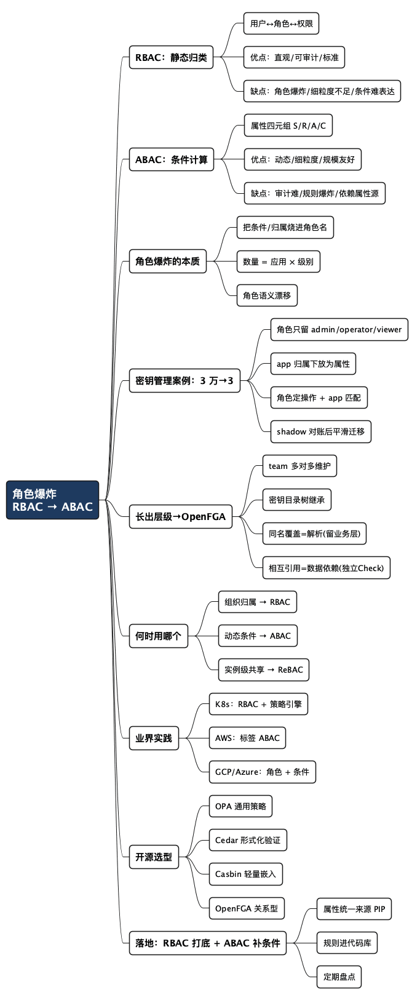

如何解决角色爆炸问题：从 RBAC 到 ABAC
Posted on 六 08 8月 2026 in Tech
| Abstract | 如何解决角色爆炸问题：从 RBAC 到 ABAC |
|---|---|
| Authors | Walter Fan |
| Category | Cloud / Security |
| Status | v1.0 |
| Updated | 2026-08-08 |
| License | CC-BY-NC-ND 4.0 |
如何解决角色爆炸问题：从 RBAC 到 ABAC
有一段时间，我特别怕给人开权限。不是怕麻烦，是怕我开出去的那个角色，下个月没人说得清它是干嘛的。
我们系统的角色列表，是这样一步步变长的。早年间就两三个角色——管理员、编辑、访客，清爽得很。后来接了密钥管理的需求，为每个应用（app）都设置了专门的角色：app1_admin、app1_viewer、app2_admin、app2_viewer……一开始管理的应用不多还好，后来应用急剧增长，上万个应用就要有上万个角色。一年下来，角色表几万行，好多人名下挂着五六个角色，还有几个角色是为了某一个人单独建的，角色名里都开始出现应用名和人名了。
按理说 RBAC（基于角色的访问控制）用了这么多年，不该越用越乱。但这里有个反直觉的事实：
角色越来越多，往往不是 RBAC 用错了，而是你正在拿 RBAC 表达一种它天生不擅长表达的东西——条件。条件不是角色，硬把条件塞进角色里，就是角色爆炸。
这篇文章，我想把 RBAC 和 ABAC（基于属性的访问控制）的区别讲透：各自的优点和缺点、为什么角色会爆炸、以及我是怎么一步步把那三万个角色塌回三个的。行文尽量不用术语砸人，文末有一张检查清单，你可以照着盘一遍自己的权限系统。
- 讲什么：RBAC 的边界、ABAC 的机制、两者的取舍、业界大厂怎么做、开源框架选型、混合落地
- 不讲什么：ReBAC 与实例级共享（在《从 RBAC 到 OpenFGA》里已展开）
一、RBAC 是干嘛的：给权限加一层"岗位"
RBAC 的精髓一句话：在"人"和"权限"之间，插一层"角色"当缓冲。
flowchart LR
U[用户 User] -- 分配 --> R[角色 Role]
R -- 授予 --> P[权限 Permission]
用人话讲，它模仿的是现实单位里的门禁：你不是凭自己的名字开门，而是凭工牌上挂的"门禁组"。张三走了，卡收回来就行，不用重新配锁；岗位权限变了，把整个组调整一下，比逐个人改省事得多。
NIST（美国国家标准与技术研究院）在 1992 年提出 RBAC 的概念，1996 年由 Sandhu 等人给出统一模型，后来成为 ANSI INCITS 359 标准。它能成为企业系统几十年的主力，根本原因是一个：它和人类组织的方式同构。组织里本来就分岗位、分工种，权限跟着岗位走，天经地义。
标准的 RBAC 就三件事：
- 用户 ↔ 角色：把用户挂到哪些角色上（入职分配、离职回收）
- 角色 ↔ 权限：每个角色能干什么（角色和操作的绑定）
- 会话：登录之后实际激活哪几个角色（比如下班后管理员角色自动失效）
进阶的 RBAC 还有角色继承（经理继承员工的权限）和职责分离约束（管钱的和记账的不能是同一个人），这些都是在"角色"这层上做文章，骨架没变。
二、RBAC 的优点和缺点，我都说清楚
先讲公道话。RBAC 不是不好，它好的地方非常实在：
| 优点 | 具体表现 |
|---|---|
| 直观 | 人人听得懂"给张三管理员角色" |
| 可审计 | "谁能访问这份报表"能查角色映射回答出来 |
| 管理成本低 | 加人 = 配角色，换岗 = 换角色，离职 = 收角色 |
| 标准通用 | 每个框架、系统都有现成实现，零学习成本 |
缺点也很实在，而且越到后期越疼：
| 缺点 | 具体表现 |
|---|---|
| 角色爆炸 | 权限一加"条件"，角色按组合数膨胀 |
| 细粒度不足 | "这份文档只共享给张三"这种实例级权限没法表达 |
| 动态条件难表达 | 时间、IP、设备、金额这类运行时才有的事实，角色表达不了 |
| 语义漂移 | 角色从"岗位"变成"给谁的权限"，最后角色名全是人名和日期 |
一句话概括本质：RBAC 把权限当成"静态归类"，它默认权限主要由"你是谁"决定。 当决定权限的不再只是"你是谁"，还要看"什么时候、在哪儿、对哪份具体的东西、金额多少"时，RBAC 就有点顶不住了。
三、角色爆炸的真实场景（我的痛）
我的密钥管理服务里角色爆炸，爆得很典型。细看下来，根本原因就一条：
我们把"应用归属"烧进了"角色名"。
需求本身不复杂：每个应用（app）有自己的密钥（secret），用户需要访问特定应用的密钥。拆开就是两个维度：
应用（app）：app1, app2, app3 … → 上万个
操作：admin / viewer / operator → 3 种
用 RBAC 的老办法，每来一个应用就要建三个角色：
app1_admin # app1 的管理员
app1_viewer # app1 的查看者
app1_operator # app1 的操作者
app2_admin
app2_viewer
app2_operator
...
10000 个应用 × 3 种操作 = 30000 个角色。关键是，每多一个应用，角色数量就加三个——新应用上线了？加三个角色。应用要分环境（prod/staging）了？再翻倍。一年前还是几十个角色，年底就几万个了。
角色爆炸有四个典型症状，中两三个就该警惕了：
- 角色数量几万个，没人能解释清楚大半是干嘛的
- 新角色建得快，旧角色回收得慢，僵尸角色扎堆
- 离职审计变成大工程：查"这个人挂了多少角色"要翻半天
- 角色名开始出现应用名和人名（
app12345_admin_for_zhangsan）
这里的本质矛盾是：RBAC 希望"角色的数量 ≈ 岗位的数量"，而岗位数量是稳定的；可当"应用归属"这种高基数维度掺进来，角色数量 ≈ 应用数 × 操作数，应用是会爆炸的。
四、ABAC 是什么：用属性算规则，不列名单
ABAC（Attribute-Based Access Control，基于属性的访问控制）换了一条路：不枚举"谁对什么有什么权限"，而是写规则，让属性参与运算。
NIST SP 800-162 给出的定义很精确：基于主体（Subject）的属性、客体（Object）的属性、环境（Context）条件，以及一组策略规则，来决定"是否允许这次操作"。通俗地说，一次授权判断要看四类属性：
| 属性 | 回答的问题 | 例子 |
|---|---|---|
| 主体属性 Subject | 请求者是谁、是什么身份 | 部门、职级、用工形式、租户 |
| 资源属性 Object | 操作对象是什么 | owner、敏感级别、所属区域、项目 |
| 操作 Action | 想干什么 | 查看、导出、审批 |
| 环境属性 Context | 在什么条件下 | 时间、IP、设备可信度、风控分 |
决策就变成一道布尔表达式：
allow = rule( 主体的属性, 资源的属性, 操作, 环境的属性 )
类比一下：RBAC 是"门禁卡"——刷卡，看你属于哪个组；ABAC 是"安检规则"——不看你是谁，看你的行李、目的地、飞行时间满不满足规定。
在工程上，ABAC 通常拆成这几个角色（这也是授权领域最经典的分层，PEP 是执行点、PDP 是决策点、PIP 是属性源）：
flowchart LR
Req[请求] --> PEP[PEP 策略执行点<br/>拦截]
PEP --> PDP[PDP 策略决策点<br/>算 allow/deny]
PDP -->|缺属性| PIP[PIP 属性源<br/>补属性]
PIP -->|属性| PDP
PDP -->|allow / deny| PEP
PEP -->|放行 / 拒绝| App[业务系统]
用 OPA（一个开源策略引擎，用 Rego 语言写策略）表达密钥管理的需求，大约是这样的：
package authz
import rego.v1
default allow := false
# 密钥管理：用户只能访问自己所属应用的密钥
allow if {
input.subject.role in {"admin", "viewer", "operator"} # 角色是这三种之一
input.resource.app in input.subject.apps # 资源的 app 在用户的 apps 列表里
input.action in {"read", "write", "rotate"} # 操作在允许范围内
}
看不懂 Rego 没关系，看语义就够了：一条规则，把"角色、应用归属、操作"三个条件一起算，满足就放行，不满足就拒绝（默认拒绝，这是对的）。关键差异在于——这里没有"app12345_admin"这个角色，应用归属是被算出来的，不是被造出来的。
五、两者的区别讲透：一张表 + 同一个需求的两个写法
把 RBAC 和 ABAC 放一张表里对看，区别就清楚了：
| 维度 | RBAC | ABAC |
|---|---|---|
| 核心问题 | 你属于哪个角色？ | 这些属性是否满足条件？ |
| 决策方式 | 查映射表（静态） | 算规则（动态） |
| 权限粒度 | 角色级，偏粗 | 属性级，可细到单个实例 |
| 表达时间/IP/风控等条件 | 几乎不行，只能造角色 | 天然支持 |
| "谁能访问 X" | 查角色就能回答 | 要把规则跑一遍才知道 |
| 加一个新条件 | 新增角色，组合数膨胀 | 加一条规则/一个属性 |
| 用户量大、权限差异大 | 角色会爆炸 | 相对稳定 |
| 上手门槛 | 低，人人会 | 高，需要策略工程 |
| 典型标准/工具 | ANSI INCITS 359；Spring Security | NIST SP 800-162；OPA/Rego、Cedar、Casbin |
再看同一个需求，两种写法摆在一起，体会更深。需求："用户只能访问自己所属应用的密钥。"
RBAC 的写法——每来一个应用就建三个角色，还要记得把新角色挂到新人头上：
app1_admin
app1_viewer
app1_operator
app2_admin
app2_viewer
app2_operator
... # 上万个应用，几万个角色
ABAC 的写法——不用建任何应用级角色，一条规则搞定：
allow if {
input.subject.role in {"admin", "viewer", "operator"}
input.resource.app in input.subject.apps
input.action in {"read", "write", "rotate"}
}
以后新应用上线了？不用建角色，用户的属性里带上 apps: [app1, app2, new_app] 就行。以后要限制只能读不能写？规则里改一行 input.action == "read"，一次生效。RBAC 的扩张靠"加角色"，ABAC 的扩张靠"加属性、改规则"，这就是本质区别。
再往深想一层：在 ABAC 眼里，"角色"并不特殊——它只是主体的一个属性。input.subject.role == "editor" 这样一条规则，是 ABAC，也恰好等价于 RBAC。也就是说，ABAC 不否定 RBAC，它包含 RBAC：RBAC 能表达的，ABAC 一行规则就能表达；而 ABAC 能表达的"条件"，RBAC 只能拿角色去换。想通这一层，两者的关系就清楚了——不是对垒，而是泛化与特化。
六、把这个例子讲透：三万个角色怎么塌回三个
回到我的密钥管理服务。当时我没有推倒重来，而是做了一次"拆应用归属"的手术。核心动作只有一句话：把"应用归属"从角色名里赶出去，让它回归属性。 下面一步步拆。
6.1 重新建模：角色里不该有 app
先看清楚问题出在哪。app123_admin 这个角色，其实塞了两件事：
admin——这是权限级别，稳定、可枚举（就 admin / operator / viewer 三种）app123——这是应用归属，高基数、天天在长
把它们焊在一起，就注定了"角色数 = 应用数 × 级别数"。拆开之后：
| 建模对象 | 改造前（纯 RBAC） | 改造后（RBAC + ABAC） |
|---|---|---|
| 角色 | app1_admin … app10000_viewer，约 3 万个 |
admin / operator / viewer，3 个 |
| 用户 | 挂一堆 appX_role 角色 |
挂两个属性：roles 和 apps |
| 密钥（资源） | 归属靠角色名隐含 | 显式带一个 app 属性 |
| 判断依据 | 查角色映射表 | 角色定操作 + app 归属匹配 |
一句话：角色只留"能做什么"，把"对哪个 app"下放成属性。
6.2 属性从哪来（PIP 别漏）
ABAC 的规则再漂亮，属性不对也是白搭。这个场景要落地，先把两处属性的来源定死：
- 用户 → apps：用户负责哪些应用，本来就存在于应用注册表 / CMDB / 组织系统里。把它当权威源（PIP，属性源），别让权限系统自己维护一份会漂移的副本。
- 密钥 → app：每个密钥创建时就该带上"属于哪个 app"。这一步最容易被忽略——历史密钥如果没有 app 归属，得先补一轮数据回填，否则规则无从判起。
6.3 完整策略：RBAC 打底 + ABAC 补条件
把两者拼起来，一份能直接跑的 Rego 长这样：
package secrets.authz
import rego.v1
default allow := false
# —— RBAC 打底：3 个角色各能做什么，固定不变 ——
role_actions := {
"viewer": {"read"},
"operator": {"read", "rotate"},
"admin": {"read", "rotate", "write", "delete"},
}
# —— ABAC 补条件：用户必须归属于这个密钥所属的应用 ——
allow if {
some role in input.subject.roles # 用户的某个角色
input.action in role_actions[role] # 该角色允许这个操作
input.resource.app in input.subject.apps # 且密钥的 app 在用户负责的 apps 里
}
三个角色定"能做什么"，一条 app 归属定"能对谁做"。这就是把 RBAC 和 ABAC 各摆在它擅长的位置。
6.4 一次请求怎么走
假设张三是 operator，负责 app123 和 app888，现在要轮转（rotate）app123 的一个数据库密钥。请求上下文长这样：
{
"subject": { "id": "zhangsan", "roles": ["operator"], "apps": ["app123", "app888"] },
"action": "rotate",
"resource": { "type": "secret", "app": "app123", "name": "db-password" }
}
引擎的判断：operator 的允许操作里有 rotate（过），app123 在张三的 apps 里（过）→ allow。
换几个输入立刻见分晓：他去 rotate app999 的密钥？app999 不在 apps 里 → deny。他若是 viewer 想 rotate？viewer 只有 read → deny。全程没有一个 appX_role 角色参与。
6.5 三万个角色怎么平滑退场
存量迁移比写规则更需要胆识，硬切一定出事。我的做法是"先对账、再切流、后删角色"：
- 反推属性：把每个
appX_role角色反解成(app, 级别)二元组，聚合成每个用户的roles + apps属性表——这正好是 PIP 的第一版种子数据。 - 影子运行（shadow）：新策略引擎旁路部署，对每个真实请求同时算"老 RBAC 结果"和"新 ABAC 结果"，只比对、记差异、不拦截。
- 清零差异：差异基本来自脏数据（密钥缺 app 属性、用户 apps 不全），逐条补齐，直到新老结果一致。
- 切流 + 冻结：把决策切到新引擎，老角色只读冻结；观察一到两周无异常，再批量删掉那三万个角色。
6.6 顺带把可审计性也解决了
前面说 ABAC 有个通病是"谁能访问 X 不好查"。但这个场景恰恰相反——因为归属被建成了一个干净的属性，"谁能访问 app123 的密钥"变成一句属性查询：列出 apps 里包含 app123 的所有用户，比在三万个角色里翻 app123_* 还快还准。可见 ABAC 审计难不难，关键看属性建得干不干净，而不是模型本身。
结果很直接：角色从三万多个，塌回到三个，每一个都说得清；再接入新应用，不用建任何角色，给用户的 apps 属性加一项即可。
这里有个不变量，值得记住：
权限里"谁"的部分，用 RBAC 管；"在什么条件下"的部分，用 ABAC 管。 角色管归属，规则管条件，各司其职。
什么场景该留在 RBAC、什么该上 ABAC，大致可以这么分：
| 你的需求 | 更合适 |
|---|---|
| 谁能进系统、基本岗位权限 | RBAC |
| 时间 / 地点 / 金额 / 敏感级别等条件 | ABAC |
| 我创建的资源只有我能看（实例级归属） | ABAC（或 ReBAC） |
| 把某个文档单独共享给某人/某个群 | ReBAC（关系型授权） |
关于实例级共享和 ReBAC，我单独写过《从 RBAC 到 OpenFGA》，这里不展开。
七、当归属长出层级和目录树：用 OpenFGA 落地
前面那套 ABAC 方案，成立的前提是"归属是平的"——用户挂几个 app，密钥挂一个 app，一次属性匹配就够了。但真实系统往往会长出层级：
- 一个 app 可能由一个或多个 team 共同维护，团队管理员应自动能管团队名下所有 app 的密钥；
- app 里的密钥以目录树组织，像文件系统一样，父目录的权限要往子节点继承；
- 密钥之间还有成组和相互引用的关系。
一旦"归属"从"平的标签"长成"带继承的关系树"，ABAC 的规则就会越写越绕（每条规则都要自己去查上层）。这正是 ReBAC（关系型访问控制）和 OpenFGA 回本的地方。但动手前，得先把这几种关系分个类——它们不该全进 OpenFGA。
7.1 先分类：哪些关系进 OpenFGA，哪些不进
| 你的关系 | 本质 | 该谁管 |
|---|---|---|
| app 由一个/多个 team 维护 | 多对多归属 + 权限继承 | ✅ OpenFGA |
| 密钥目录树（folder → secret） | 层级继承 | ✅ OpenFGA |
| 下层同名密钥覆盖上层 | 解析取值语义，不是授权 | ❌ 业务逻辑 |
| 密钥成组 | 授权型分组进，纯逻辑分组不进 | 🔶 看用途 |
| 密钥相互引用 | 数据依赖，不是授权 | ❌ 业务逻辑 |
一句话原则："谁能对它做什么"交给 OpenFGA；"它的值是什么、它依赖谁"留在业务逻辑。 授权和解析是两件事，混在一起是灾难。
7.2 授权模型：team 多对多 + 目录树继承
用 OpenFGA 的 DSL 把前两类关系建出来（admin from parent_team 表示从父节点继承 admin 关系）：
model
schema 1.1
type user
type team
relations
define admin: [user]
define member: [user] or admin
# 一个 app 可被多个 team 维护 —— 多对多就是多写几条 tuple
type app
relations
define maintainer_team: [team]
define app_admin: [user] or admin from maintainer_team
define app_operator: [user] or app_admin
define app_viewer: [user] or member from maintainer_team or app_operator
# 目录节点：权限沿目录树向下继承
type folder
relations
define parent_app: [app]
define parent_folder: [folder]
define can_read: app_viewer from parent_app or can_read from parent_folder
define can_rotate: app_operator from parent_app or can_rotate from parent_folder
define can_admin: app_admin from parent_app or can_admin from parent_folder
# 密钥：挂在 folder 或 app 下，继承父节点权限
type secret
relations
define parent: [folder, app]
define can_read: can_read from parent or app_viewer from parent
define can_rotate: can_rotate from parent or app_operator from parent
define can_write: can_admin from parent or app_admin from parent
define can_delete: can_admin from parent or app_admin from parent
关键点：你原来的 admin/operator/viewer 三个角色，变成了 app 上的三种关系，并且能从 team 层层继承。maintainer_team: [team] 允许写多条 tuple，这就天然支持"一个 app 多个 team 维护"。
写关系数据（tuples）时，"团队管理员管全队 app"只要一条：
user:zhangsan admin team:payment # 张三是 payment 团队管理员
app:pay maintainer_team team:payment
secret:pay/db-password parent app:pay
一条 tuple 顶原来一片 appX_admin 角色，这就是关系图相对属性匹配的优势。
7.3 同名覆盖是"解析"，不是授权
"下层同名密钥覆盖上层"是取值语义，跟"谁能访问"无关，放业务层做。两步分离：
- 授权：
Check(user, can_read, secret:pay/prod/db/password)判能不能读； - 解析：业务逻辑按目录树从叶子往根找同名项，命中最深的那个值。
OpenFGA 没有"覆盖"这个语义，别想用它表达取值优先级，硬凑只会把模型搞烂。
7.4 相互引用默认不传递权限
"密钥 A 引用密钥 B"是数据依赖。默认不要让引用自动带上读权限——否则就是隐蔽的越权路径（能读 A，顺着引用把没授权的 B 也偷读了）。安全默认是：解引用时对 B 单独再 Check 一次。只有确实需要"能读 A 就能读它引用的 B"时，才显式建模、且要评审：
type secret
relations
define references: [secret]
# 谨慎：默认别开，开了要能解释清楚为什么
define can_read_via_ref: can_read or can_read from references
一次完整请求就串成了三件事，各归各位：Check 判授权 → 业务层做同名覆盖解析 → 解引用时再独立 Check。
7.5 上 OpenFGA 前的清单
- 先切两刀：把需求分成"授权关系"（team 归属、目录继承、授权组）和"业务语义"（同名覆盖、数据引用），只有前者进 OpenFGA。
- 压测反向查询：
ListObjects、ListUsers在深目录 + 多 team 下容易超时、碰结果上限，建模时就压测，别只验Check。 - tuple 是副本，PIP 是权威：team/app/folder 结构从 CMDB、组织系统、密钥元数据同步成 tuples，同步要幂等 + 定期对账。
- 迁移仍走 shadow：老
appX_role反解成 tuples（user X app_operator app:X），影子比对新老结果，清零差异再切流。
一句话：层级继承和目录树是 OpenFGA 的主场，果断上；但"同名覆盖"是解析、"相互引用"是数据依赖，这两个留在业务层——授权只回答"能不能"，"取哪个值、依赖谁"不归它管。 更完整的 OpenFGA 落地在《从 RBAC 到 OpenFGA》里。
八、别神话 ABAC：它的边界和坑
ABAC 不是银弹，它把"管理角色"的成本，换成了"治理属性 + 维护规则"的成本。几个坑先说在前面：
- 可审计性可能变差。 规则一多、属性一乱，"谁能访问 X"就得把规则对每个用户跑一遍才知道（第六节那种干净的单属性是幸运的例外）。合规审计时这是常见硬伤，需要有"谁可能访问 X"的估算和报告手段。
- 规则也会爆炸。 角色会爆炸，规则写得不收敛照样会爆炸。几十条互相覆盖的规则，比几百个角色更难维护。
- 依赖属性源。 属性从哪来、多新鲜、会不会被篡改，直接决定决策对不对。PIP（属性源）本身得管好，否则规则再漂亮也是沙上建塔。
- 要当"策略工程"来做。 规则是代码，要进 Git、要测试、要灰度、要回滚，不能直接在页面上手改。
- 对团队要求高。 上 ABAC 意味着团队里得有人懂策略建模，否则容易写出一堆没人敢动的规则。
一个朴素的经验：没被角色爆炸真正痛过，就别急着上 ABAC。 两三个角色能搞定的系统，上 ABAC 是给自己找运维负担。
九、业界是怎么做的：几个有代表性的实践
我说"RBAC 打底 + ABAC 补条件"，不是我发明的——业界这些年基本都收敛到了这条路。看几个最有代表性的。
Kubernetes：RBAC 打底，条件交给策略引擎
K8s 是后端最熟悉的授权教科书。它的授权模式可以叠加：RBAC 是默认推荐，Role/ClusterRole/RoleBinding 管"谁能操作哪类资源"；早期的 ABAC 模式至今还在——一堆基于文件的属性匹配，策略格式停留在 v1beta1，改策略还得重启 API server——实际项目里早被 RBAC 边缘化了。真正有意思的是：像"镜像只能来自可信仓库""Pod 不能以 root 运行"这类条件，社区没有往 RBAC 里塞，而是交给了 OPA Gatekeeper、Kyverno——策略即代码，准入时计算，本质就是 ABAC。
K8s 的演进就是一部活教材：RBAC 管身份和资源，条件交给策略引擎。
AWS IAM：用标签做大规模的 ABAC
AWS IAM 骨子里是策略式的：一条 Policy 就是一组带 Condition 的 allow/deny 规则。AWS 甚至官方命名了一种做法叫"ABAC for AWS"：给人和资源都打标签（team=payment、env=prod），策略按标签匹配。新资源上线只要贴好标签，就自动被既有策略覆盖，一行策略都不用改。RBAC 角色爆炸最疼的场景就是大规模、高频变化的环境，AWS 的答案是属性。
看几个常见的 Condition key：aws:SourceIp（来源 IP）、aws:CurrentTime（时间）、aws:PrincipalTag（请求者标签）、s3:ResourceTag（资源标签）——全是前面讲的四类属性。
Google Cloud 和 Azure：给角色加"条件尾巴"
Google Cloud IAM 表面是 RBAC 形态（预定义角色 + 自定义角色），但它很早就提供了 IAM Conditions：给角色绑定附加一段 CEL（Common Expression Language，通用表达式语言）表达式，限定这个角色只在某个时间窗口、只对带某个属性的资源生效。临时授权、属性限制，一次解决。
Azure 同理：Azure RBAC 的角色分配上可以附加 ABAC 条件，比如"只有当 blob 的索引标签是 Project=Blue 时，才授予该存储账户的读权限"。
把几家的选择摆一起：
| 平台 | RBAC 部分 | ABAC 部分 |
|---|---|---|
| Kubernetes | RBAC（默认授权模式） | 遗留 ABAC 模式 + OPA Gatekeeper / Kyverno |
| AWS | IAM Role（权限束） | IAM Policy Condition + 标签 ABAC |
| Google Cloud | 预定义 / 自定义角色 | IAM Conditions（CEL 表达式） |
| Azure | Azure RBAC 角色 | 角色分配上的 ABAC 条件 |
没有一家是纯 RBAC，也没有一家是纯 ABAC，全是"角色打底、条件补充"。 这个形态是大规模、高频变更场景里打磨出来的，和我在项目里做的那次手术方向一致。
XACML 补一句：ABAC 的"老前辈"
讲 ABAC 标准绕不开 XACML（OASIS 标准，现行版本 3.0）。十多年前它就是政务、医疗、金融场景的主流选择——病历隐私、跨机构访问控制这类"要讲同意、讲目的、讲紧急破例"的硬需求，正是 ABAC 的主场。它的问题是 XML 太啰嗦、工具链太重，新项目今天多选 Rego、Cedar；但它推广开的属性四元组和 PEP/PDP/PIP 架构，已经是行业常识。
十、成熟的开源框架和库速查
想动手的话，开源世界已经有相当成熟的选择。我只列经过大规模生产验证的：
| 项目 | 模型取向 | 形态 | 一句话点评 |
|---|---|---|---|
| OPA | 通用策略（偏 ABAC/PBAC） | Rego 语言，独立部署 / sidecar | CNCF 毕业项目，K8s 准入与统一策略面的事实标准 |
| Cedar | RBAC + ABAC 融合 | AWS 开源，引擎 Rust 实现 | 策略可读 + 形式化验证，Amazon Verified Permissions 的底座 |
| Casbin | PERM 元模型（可配成 ACL/RBAC/ABAC） | 十多种语言的库，进程内 | 轻量嵌入、零运维，中文社区友好 |
| OpenFGA | ReBAC（+ Conditions 补 ABAC） | 独立服务，CNCF 孵化项目 | 实例级共享、层级继承是它的主场 |
| Keycloak | IAM（RBAC + Authorization Services） | 一站式开源 IAM | 统一登录 + 角色，Authorization Services 能写属性/时间策略 |
| Kyverno / OPA Gatekeeper | K8s 准入策略 | YAML 规则 / Rego | 只管 K8s 里的"条件"，这两个最直接 |
| Oso | 应用内嵌授权 | Python/Java/Node/Rust 库 | 授权想嵌进业务代码、又不想写 if-else |
几句选型点评，都是前文讲过的道理：
- 单服务、只想补几个条件：Casbin 或 Oso，进程内嵌入，别动架构。
- 多服务要统一策略面，或已经在 K8s 里：OPA，准入配 Gatekeeper / Kyverno。
- 团队在意策略正确性，想让机器帮你证明"不会误放行"：Cedar，形式化验证是它的独门卖点。
- 核心痛点是实例级共享、层级继承：OpenFGA，那是 ReBAC 的活，别硬用 ABAC。
工具清单会过期，选型原则不会：先定关系形态（角色 / 属性 / 关系），再看团队和部署形态。这句话在《授权的领域模型》里展开讲过。
十一、落地建议：RBAC 打底 + ABAC 补条件
上一节看到，大厂的共识是混合：不是二选一，而是按需分层。结合我自己的实践，推荐做法：
- 按"稳定还是动态"给权限分类。 稳定的（岗位、系统入口）归 RBAC；动态的（时间、区域、金额、敏感度）归 ABAC。
- RBAC 打底。 角色继续管组织归属，该有角色继承、职责分离的继续用，可审计性保住了。
- ABAC 补条件。 在角色通过之后，再用属性规则做一次条件判断。绝大多数"动态"需求在这一层就解决了。
- 属性要有统一来源。 部门、用工形式这些别散落在各个系统，最好有一个人力/组织系统当属性源（PIP），其余地方引用。
- 规则当代码管。 进 Git、带版本、可测试、可回滚；变更走评审。
- 定期盘点。 每季度过一遍角色和规则，把僵尸角色和失效规则清掉。
一句话记住：
角色管"你是谁"，规则管"在什么条件下你能干什么"。 能用角色表达的就别上规则，角色表达不了条件了，再上 ABAC。
把角色迁移写成可回滚的实验
角色从高基数命名迁移到“稳定角色 + 动态属性”时，最重要的交付物不是新策略，而是新旧结果的对照记录。先旁路计算，不拦截真实请求；把差异按属性缺失、历史脏数据、规则理解不同分类；差异清零后再切流，并保留旧模型只读一段时间。
每次迁移都应能回答四个问题：哪些请求会从允许变成拒绝，哪些请求会反过来放开，属性从哪个权威系统来，紧急回滚由谁执行。这样“角色数量下降”只是结果之一，真正可审计的是每个权限变化都能解释、能测试、能撤回。
最后一句
回到开头那个场景。后来我把那批"app1_admin、app2_admin、app12345_viewer"们拆掉了，系统里的角色重新变得每个都说得清。那种感觉，就像收拾完一个堆了三年杂物的储藏室。
权限这件事，最难的从来不是规则怎么写，而是规则会变——人来了又走，组织合并拆分，合规要求越来越细。RBAC 给了一个稳定的骨架，ABAC 给了骨架长肉的空间。模型选对了，后面所有"又变了"的需求，都不会再让你头皮发麻。
行动清单
- 把系统里的角色拉出来，数一数：有没有角色名里带人名、区域名、时间段的？有，就是条件被烧进角色名了。
- 对每个角色问一句"它代表的岗位是什么"，答不上来的就是语义漂移，标记待拆。
- 把需求里的"条件"列出来：时间、区域、金额、敏感级别、设备……这些都不该是角色。
- 选定策略引擎（OPA / Cedar / Casbin 都可以起步），先挑一个高频需求，把"条件"写成规则。
- 属性找好来源：部门、用工形式从哪来、谁来维护、多久更新一次。
- 把规则放进代码库，写测试、定灰度、留回滚，别在页面上手改。
- 三个月后再拉一次角色表，和这次对比，看"角色数量"有没有降下来。
全文思维导图
@startmindmap rbac_vs_abac_mindmap
<style>
mindmapDiagram {
node {
BackgroundColor #F8F9FA
RoundCorner 10
Padding 10
FontSize 13
}
:depth(0) {
BackgroundColor #1E3A5F
FontColor white
FontSize 18
FontStyle bold
}
:depth(1) {
FontSize 15
FontStyle bold
}
:depth(2) {
FontSize 13
}
}
</style>
* 角色爆炸\nRBAC → ABAC
** RBAC：静态归类
*** 用户↔角色↔权限
*** 优点：直观/可审计/标准
*** 缺点：角色爆炸/细粒度不足/条件难表达
** ABAC：条件计算
*** 属性四元组 S/R/A/C
*** 优点：动态/细粒度/规模友好
*** 缺点：审计难/规则爆炸/依赖属性源
** 角色爆炸的本质
*** 把条件/归属烧进角色名
*** 数量 = 应用 × 级别
*** 角色语义漂移
** 密钥管理案例：3 万→3
*** 角色只留 admin/operator/viewer
*** app 归属下放为属性
*** 角色定操作 + app 匹配
*** shadow 对账后平滑迁移
** 长出层级→OpenFGA
*** team 多对多维护
*** 密钥目录树继承
*** 同名覆盖=解析(留业务层)
*** 相互引用=数据依赖(独立Check)
** 何时用哪个
*** 组织归属 → RBAC
*** 动态条件 → ABAC
*** 实例级共享 → ReBAC
** 业界实践
*** K8s：RBAC + 策略引擎
*** AWS：标签 ABAC
*** GCP/Azure：角色 + 条件
** 开源选型
*** OPA 通用策略
*** Cedar 形式化验证
*** Casbin 轻量嵌入
*** OpenFGA 关系型
** 落地：RBAC 打底 + ABAC 补条件
*** 属性统一来源 PIP
*** 规则进代码库
*** 定期盘点
@endmindmap

本文是授权系列的补充篇，系列相关文章： - 授权的领域模型：从 RBAC、ABAC 到 Keycloak、Vault 的一张全景图 - 从 RBAC 到 OpenFGA：细粒度授权的架构、落地与取舍 - PERM 模型与 Casbin：把云端授权从代码里抠出去 - 如何为你的服务创建统一的授权中心
本作品采用知识共享署名-非商业性使用-禁止演绎 4.0 国际许可协议进行许可。 欢迎在我的个人网站 https://www.fanyamin.com 访问原文并评论。